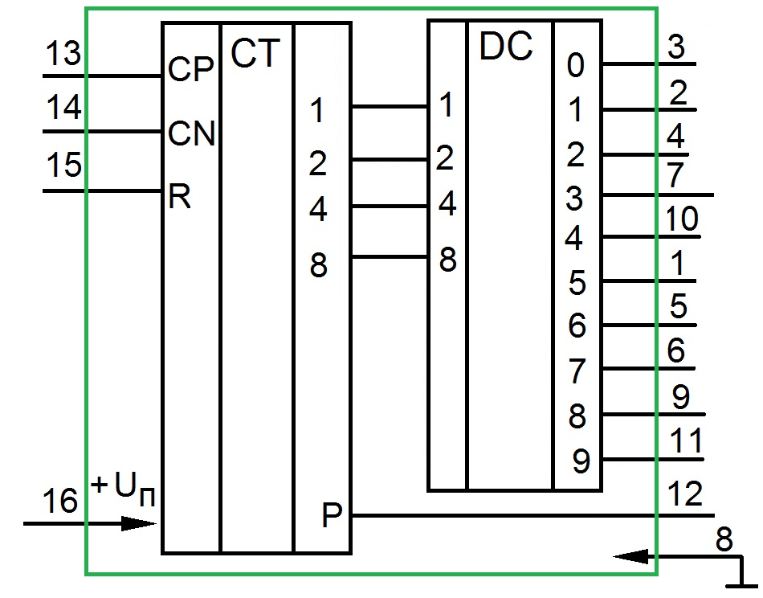

Микросхема K176ИЕ8
Микросхема КМОП К176ИЕ8 представляет десятичный счетчик с дешифратором (рис. 1). Корпус типа 238.16.1 и типа 2103.16.1.1. Масса не более 1,5 г.
Микросхема имеет 10 дешифрированных выходов 0...9. Схема счетчиков содержит пятикаскадный высокоскоростной счетчик Джонсона и дешифратор, преобразующий двоичный код в сигнал на одном из десяти выходов.

Рис. 1 - Микросхема К176ИЕ8
Если на входе разрешения счета СР счётчика К176ИЕ8 присутствует низкий уровень, то счетчик выполняет свои операции синхронно с положительным перепадом на тактовом входе С. При высоком уровне на входе СР действие тактового входа запрещается и счет останавливается. При высоком уровне на входе сброса R счетчик очищается до нулевого отсчета.
На каждом выходе дешифратора высокий уровень появляется только на период тактового импульса с соответствующим номером. Счетчик имеет выход переноса P (выв. 12). Положительный фронт выходного сигнала переноса появляется через 10 тактовых периодов и используется как тактовый сигнал для счетчика следующей декады.
Длительность импульса запрета счета должна превышать 300 нс, длительность тактового импульса не должна быть меньше 250 нс. Время действия импульса сброса должно превышать 275 нс.
Вход R служит для установки триггеров в исходное состояние, при котором на выходах 1-9 имеется напряжение низкого уровня, а на выходе P - напряжение высокого уровня. Входные импульсы можно подавать на один из входов СР или CN. При подаче же импульсов на вход СР изменение состояния счетчика происходит по фронту импульсов (при этом на входе CN должно быть напряжение низкого уровня). При подаче же импульсов на вход CN изменение состояния происходит по срезам импульсов (при этом на втором входе СР должно быть напряжение высокого уровня). На активном выходе, номер которого соответствует числу импульсов, поступивших после установки в исходное состояние, имеется напряжение высокого уровня (в отличие от напряжения низкого уровня в К155ИД3)
| Наименование параметра | Значение |
|---|---|
| Номинальное напряжение питания | 9 В ±5% |
| Напряжение питания | 3...15 В |
| Ток потребления при максимальном напряжении питания | 0,2 мА |
| Выходное напряжение низкого уровня | <0,3 В |
| Выходное напряжение высокого уровня | >8,2 В |
| Входной ток низкого уровня | > -0,3 мкА |
| Входной ток высокого уровня | <0,3 мкA |
| Ток потребления | <100 мA |
| Ток потребления в динамическом режиме | <0,15 мA |
| Входная емкость | <14 пФ |
| Время задержки распространения сигнала | 1700 нС |
| Частота входного сигнала | 2 МГц |
| Диапазон рабочих температур | -45...+70°С |
Аналоги микросхемы К176ИЕ8
CD4017A, К561ИЕ8